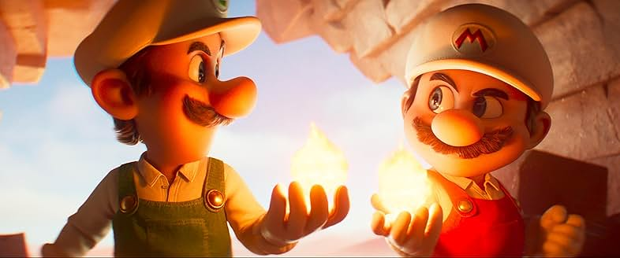

The Super Mario Galaxy Movie
Mario Galaxy · Film · 2026

Image © Nintendo / Illumination
This is a forgettable movie. I enjoyed the elaborate soundtrack built around melodies we have heard in the games. The animation is also still stunning, especially in the flying scenes across different planets and in the sequences where gravity pulls the characters onto the walls. However, that is about all I can say about its positive aspects.
This movie feels inconsistent. It is not clear what its message is supposed to be. Is it about family? Mario and Luigi are supposed to be the emotional center as brothers, yet that idea is only briefly mentioned in an awkward joke that does not land. At first, the film also seems unsure about Bowser. Is he meant to be the same vain villain as always, or has he been given a more sympathetic side? Bowser Jr. appears as a tantrum-prone villain desperate for his father’s approval. Rosalina and Peach’s backstory seems like it should have more depth, but it is presented in a very brief and superficial way. Is it a love story? Not really, since Mario and Peach’s relationship is not developed either.
The story is also overloaded with game references crammed into the movie. Fox McCloud is a wonderful character because of his space adventures, but here he feels underused and short-lived. Baby Mario and Luigi also felt forced, and the strange thing is that the baby T-Rex disappears later in the movie without much explanation.
Maybe only one or two jokes actually made me laugh in the theater. References to the more unusual Super Mario Bros. 2 elements, such as Wart and Birdo, feel rushed and unimportant. Yoshi’s addition did not work for me either.
I would like to turn the page on this movie. It is just too flat. For me, it lost a life, but this story still has a lot of 1-Ups left.